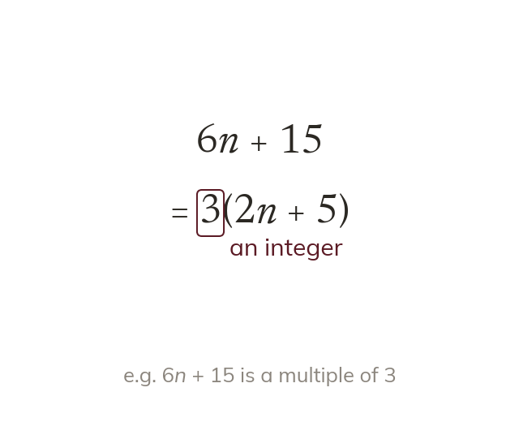

A multiple of k is k times an integer
A multiple of k is k times an integer. The proof factorises k out and names the bracket an integer.
An expression is a multiple of k when it can be written as k times an integer. So the proof factorises k out and says that the bracket is an integer.